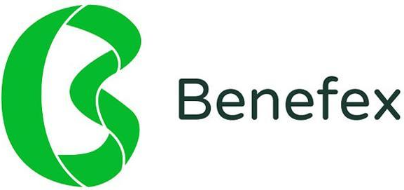
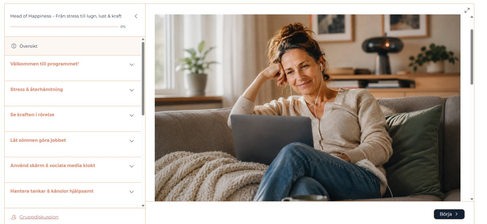
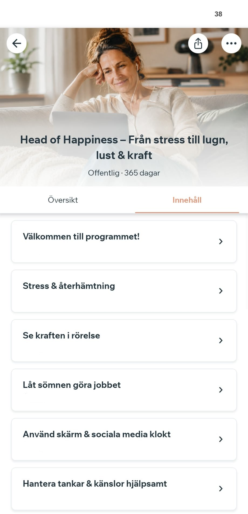
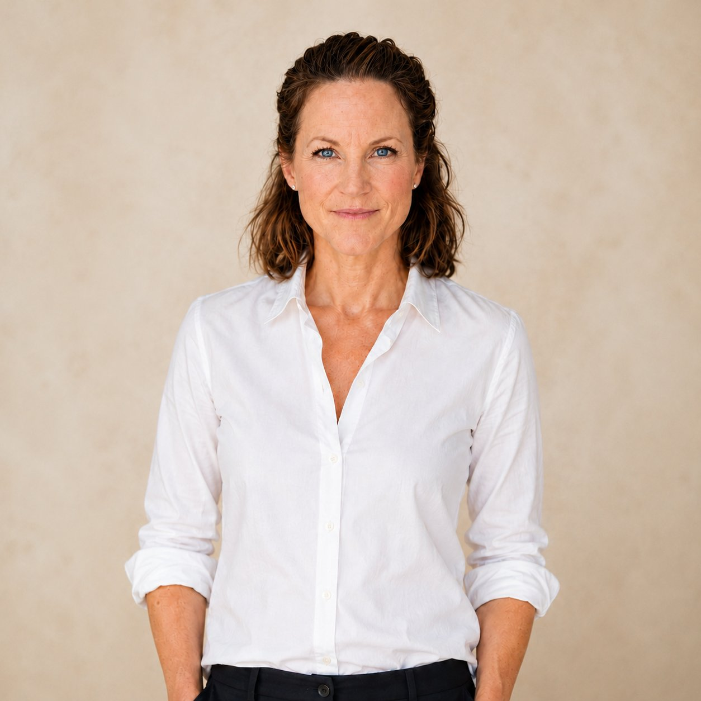

Digitalt program + gruppträffar · 365 dagar
Head of Happiness hjälper dig att förstå vad som belastar just dig, skapa lugn här och nu och få kraft att ta tag i det som faktiskt behöver förändras.
Godkänt som friskvård – använd ditt friskvårdsbidrag
Betala med ditt friskvårdsbidrag i förmånsportalerna

Tecken på för mycket stress
Känner du igen dig i något av det här? Ofta hänger signalerna ihop – och påverkar varandra mer än vi tror.
När allt hänger ihop
Sover du dåligt blir du mer känslig för stress. Är du stressad blir det svårare att varva ner och sova. När energin sjunker kanske du rör dig mindre, tappar lusten och får svårare att ta tag i sådant som egentligen skulle få dig att må bättre.
Samtidigt påverkas vi av våra tankar och känslor, relationer, vanor, egna krav och det som händer runt omkring oss.
Allt hänger ihop. Och det är faktiskt också det hoppfulla.
För när du börjar förändra en sak kan det påverka nästa. Mer återhämtning kan ge mer energi. Rörelse kan hjälpa både sömn och mående. Nya sätt att hantera tankar och känslor kan minska stresspåslaget. Och mer kraft gör det lättare att ta tag i det som faktiskt behöver förändras.
Därför börjar Head of Happiness med din helhet. Du får hjälp att förstå vad som belastar och påverkar just dig – utan att behöva försöka förändra allt på en gång.
Vi börjar där det kan göra skillnad för dig. Ett steg kan göra nästa lite lättare.
Så hjälper vi dig
Det finns ingen övning som är rätt för alla. Vad som belastar dig, vad du behöver och var du behöver börja är individuellt.
Därför börjar vi med dig. Du får förstå vad som påverkar just dig och tar sedan ett steg i taget – från stress och låg energi mot mer lugn, kraft och handlingsutrymme.
När du förstår vad som händer i kroppen och hjärnan vid stress blir det lättare att förstå varför du mår och reagerar som du gör. Du får också syn på vad som belastar just dig.
Förståelsen skapar trygghet och kan ge tillbaka känslan av kontroll – redan innan något omkring dig har förändrats.
Du får enkla verktyg för att minska stresspåslaget och skapa mer lugn här och nu. När kroppen får möjlighet att varva ner skapar du bättre förutsättningar för återhämtning.
Och när kraften börjar komma tillbaka blir det lättare att ta tag i det som faktiskt behöver förändras.
Livet kommer fortsätta att utmana. Skillnaden är att du kan bli bättre rustad att möta det.
Du får verktyg för att hantera tankar, känslor och svåra situationer på mer hjälpsamma sätt – och känna dig tryggare i din egen förmåga när livet är tufft.
När du fått tillbaka mer lugn och kraft blir det lättare att lyfta blicken. Vad är viktigt för dig? Vad ger dig energi? Vad behöver få mer – eller mindre – plats?
Du får hjälp att sätta gränser, göra medvetna val och steg för steg skapa mer av det liv du faktiskt vill leva.
Allt finns i appen och på datorn, i korta avsnitt du tar när det passar dig. Du får utforska allt från stress och återhämtning, sömn och rörelse till tankar, känslor, relationer och vad som faktiskt är viktigt för dig.
Du behöver inte göra allt. Du börjar där du är och fokuserar på det som gör störst skillnad för just dig.
Du lär dig grunderna snabbt, när det passar dig. Rätt kunskap är grunden för att kunna agera tryggt och effektivt.
Sänk stressen och hantera tankar och känslor hjälpsamt. Din första övning tar två minuter.
Kartlägg var du är, reflektera och agera. Reflektionsuppgifterna skapar insikt och drivkraft.
Allt blir enklare tillsammans. Du har stöd av både grupp och coach hela vägen.


Programmet ger dig kunskap och verktyg – men ibland behöver man också få ställa en fråga, resonera eller få hjälp att komma vidare.
Därför bjuds du två gånger i månaden in till en digital live-träff på 60 minuter med Lisa Jonsson, hälsopromotör. Vi går igenom ett tema, och det finns tid för frågor. Kom när du vill och behöver.
Vi håller grupperna små så att det finns utrymme för frågor och samtal. Vid behov öppnar vi fler grupper.
Träffarna är frivilliga och ingår under hela året.
Du kan vara igång redan idag.
Rekommenderat av specialistläkare i allmänmedicin
Head of Happiness presenterar en lättillgänglig och vetenskapligt förankrad bild av hur stress fungerar och vad du kan göra åt den.
Jättebra att få ett samband kring hur allt hänger ihop och en kunskap om vad man faktiskt kan påverka själv.
Frågor som känns svåra och stora har ni fått ner väldigt enkelt och lätt! Jag upplever nu att saker och ting inte är så komplicerat.
Jag tycker om den tydliga strukturen i programmet med alla steg, lättillgängligheten, val av övningar, bra innehåll.
Intressant innehåll för ökad förståelse om vad som händer i kroppen. Viktigt att förstå mer än att bara prata stress utifrån det yttre.

Din programledare
För ett antal år sedan ställde jag höga krav på mig själv på alla fronter. Jag ville prestera i arbetet, vara den bästa mamman, en engagerad vän och en uppskattad partner som fixar allt. Jag var ständigt aktiv och gav mig själv väldigt lite tid för återhämtning. Jag sov ju på natten. Räckte inte det?
Till slut reagerade kroppen med panikattacker. Och jag förstod verkligen inte varför. Jag tyckte inte ens att jag var stressad. Trots att jag sökte hjälp saknade jag fortfarande helhetsbilden som fick mig att förstå vad som hände och vad jag faktiskt behövde göra.
När jag senare fick kunskap om stressfysiologi och började förstå helheten föll bitarna på plats. Jag kunde plötsligt se vad jag behövde göra här och nu för att få tillbaka kraft – och vad jag behövde förändra på längre sikt. Det blev glasklart.
Det gav mig en helt annan känsla av kontroll och jag hittade tillbaka till lugn, lust, driv och energi.
Den erfarenheten är en viktig anledning till att jag varit drivande i att utveckla Head of Happiness. Jag vill ge fler den kunskap jag själv saknade. För när vi förstår vad som händer får vi också en helt annan möjlighet att påverka hur vi mår.
Med värme och kraft,
Lisa Jonsson
Ja. Head of Happiness är godkänt som friskvård och finns hos Epassi, Benifex (f.d. Benify) och Söderberg & Partners Benefits. Använder din arbetsgivare en annan portal går det bra att betala direkt och lämna in kvittot du får på e-post.
Det är individuellt. En del upplever att bara förstå vad som händer i kroppen och varför de reagerar som de gör skapar lugn och en känsla av kontroll. Andra behöver mer tid och träning. Du får tillgång till hela programmet direkt och kan börja där det känns mest relevant för dig.
Nej. Allt innehåll är uppdelat i korta avsnitt som du tar del av när det passar: under promenaden, på bussen eller till morgonkaffet. Du har tillgång i ett helt år, så du kan ge dig själv den tid du behöver och gå tillbaka när livet ändrar sig.
Ja – programmet är gjort för att fungera även när livet redan är fullt. Innehållet är uppdelat i korta avsnitt och du arbetar i din egen takt. Ibland räcker några minuter för att lära dig eller träna på något som du sedan kan använda i vardagen. Många upptäcker dessutom att de frigör tid, för när du börjar prioritera mer i linje med vad som är viktigt för dig blir det både mer lust och mer luft i livet.
Programmet är för dig som känner dig stressad, trött eller ur balans – eller som vill förstå dig själv bättre och skapa mer lugn, kraft och handlingsutrymme i livet. Du behöver inte vara sjukskriven eller må väldigt dåligt för att ha nytta av programmet.
Absolut. Och vad härligt att du redan mår bra! Head of Happiness är inte bara till för dig som känner dig stressad eller mår dåligt. Det är också för dig som vill förstå dig själv bättre, stärka det som redan fungerar och skapa ännu bättre förutsättningar för att må bra över tid. Du får kunskap och konkreta verktyg som kan hjälpa dig att gå från bra till ännu bättre – och stå stadigare när livet blir mer utmanande.
Head of Happiness ersätter inte medicinsk vård eller psykologisk behandling. Om du mår mycket dåligt, har en svår depression eller andra allvarliga psykiska besvär ska du i första hand söka professionell vård. Programmet kan däremot användas som ett komplement om det bedöms passa din situation.
Ja. Från januari 2027 ingår digitala gruppträffar två gånger i månaden med mig som programledare. Där kan du ställa frågor, få stöd och hjälp att komma vidare. Träffarna är frivilliga och sker i små grupper.
Nej. Gruppträffarna är helt frivilliga. De finns där för dig som vill kunna ställa frågor, få stöd och fördjupa det du arbetar med. Du kan använda hela programmet utan att delta i en enda träff.
Då avslutas din tillgång till programmet automatiskt. Det är inget abonnemang och inget som förnyas av sig själv – du behöver inte säga upp någonting.
Vill du ha personligt stöd?
Ett individuellt samtal för dig som vill få hjälp att sortera, hitta riktning och komma vidare med en förändring i vardagen. Samtalet utgår från din situation, dina resurser och vad som kan hjälpa dig framåt.
Inte redo att börja än?
Vill du först få en bild av hur stressen påverkar dig just nu? Gör ett evidensbaserat stresstest från Karolinska Institutet och få vägledning utifrån ditt resultat. Det är kostnadsfritt och du behöver inte lämna din e-postadress.
Du kan inte styra allt som händer i livet. Men du kan förstå vad som händer i dig – och få verktyg för att hantera det.
2 495 kr